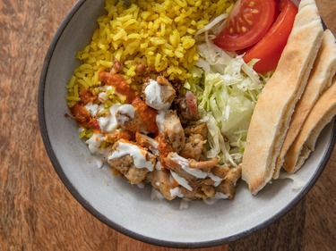
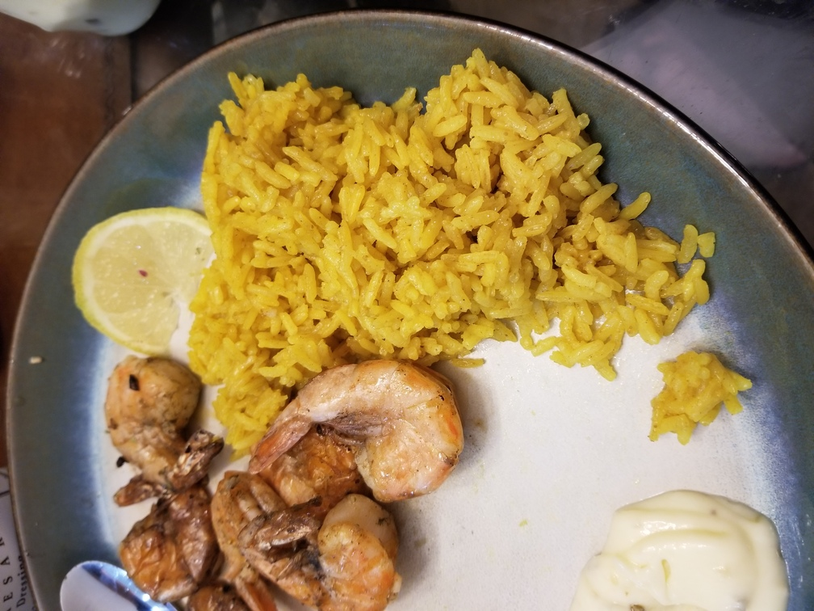

Turmeric Rice
Originally from: Serious Eats

Ingredients
- 2 Tbl butter
- 1/2 tsp turmeric
- 1/4 tsp ground cumin
- 1 1/2 cups rice
- 2 1/2 cups chicken broth
Directions
- Melt butter in pot, add spices and cook until fragrant.
- Add rice and cook until lightly toasted, about 4 minutes.
- Add chicken broth and some salt / pepper. Bring to boil.
- Cover, then reduce heat to low. Cook for 15 minutes and remove from heat. Let rest until water is gone and rice is tender, about another 15 minutes.
Notes
-
2020-11-22 - Recipe works well, I've added chopped onions sometimes. Nothing too strong or different, but gets nice rice with good yellow color.
